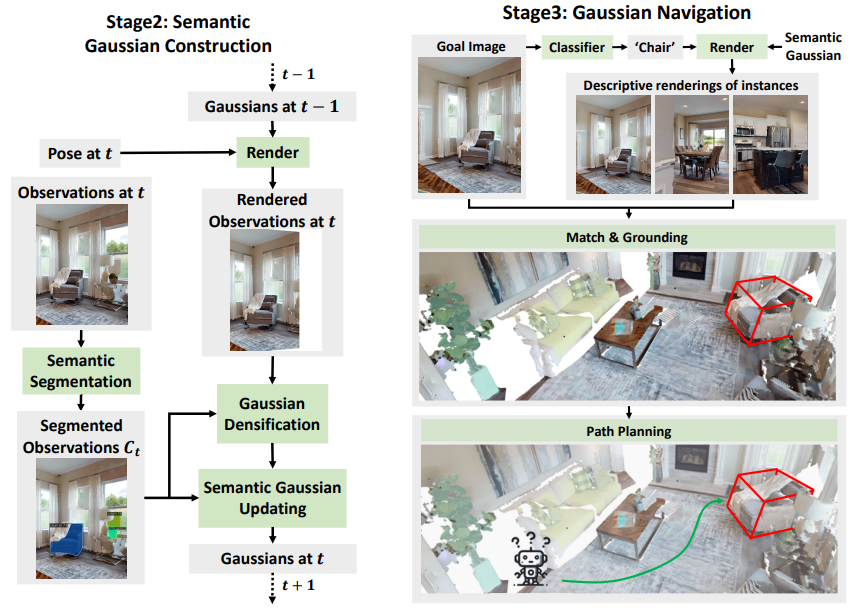

|
Xiaohan Lei 雷潇涵
PhD Student (grade 1) University of Science and Technology of China (USTC) Email: leixh (at) mail.ustc.edu.cn |
About Me
I am a PhD student at University of Science and Technology of China (USTC), advised by Prof. Wengang Zhou and Prof. Houqiang Li.
I'm currently interested in Embodied Vision and Manipulation.
Research
|

|
Xiaohan Lei, Min Wang, Wengang Zhou, Houqiang Li
GaussNav: Gaussian Splatting for Visual Navigation arxiv preprint, 2024. [pdf] [project_page] |
|
|
Xiaohan Lei, Min Wang, Wengang Zhou, Li Li, Houqiang Li
Instance-aware Exploration-Verification-Exploitation for Instance ImageGoal Navigation IEEE / CVF Computer Vision and Pattern Recognition Conference (CVPR), 2024. [pdf] [project_page] |